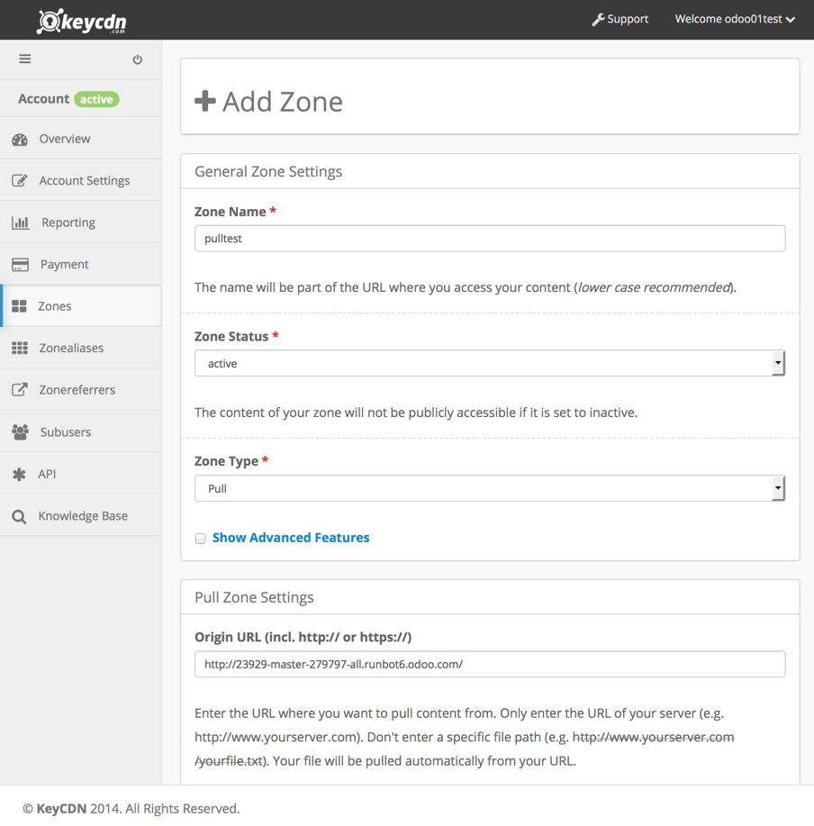
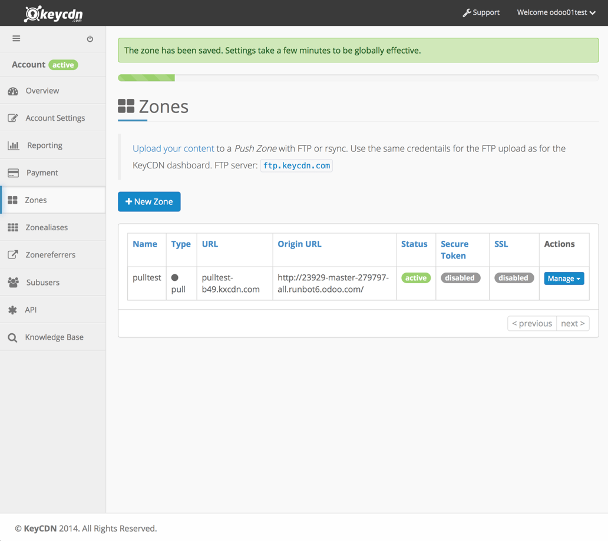
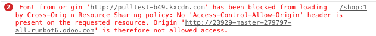

Развертывание с помощью KeyCDN
Этот документ поможет вам настроить учетную запись KeyCDN для вашего веб-сайта на Odoo.
Шаг 1. Создайте pull zone dпанели управления KeyCDN.
При создании зоны включите параметр CORS в подменю advanced features. (подробнее об этом ниже)
После этого вам придется немного подождать, пока KeyCDN просканирует ваш сайт.
Примечание
будет создан новый URL-адрес для вашей зоны, в примере - http://pulltest-b49.kxcdn.com
Шаг 2. Настройте Odoo.
In the Odoo back end, go to the Website Settings: menu, then activate the CDN support and copy/paste your zone URL in the CDN Base URL field. This field is only visible and configurable if you have developer mode activated.
Теперь ваш сайт использует CDN для ресурсов, соответствующие регулярным выражениям в CDN filters.
Вы можете взглянуть на HTML своего сайта, чтобы проверить, правильно ли работает CDN-интеграция.
Почему я должен активировать CORS?
Ограничение безопасности в некоторых браузерах (Firefox и Chrome на момент написания) предотвращает загрузку ресурсов по относительным ссылкам из файла CSS, который размещен на внешнем сервере.
Если вы не активируете опцию CORS в зоне CDN, самой очевидной проблемой на вашем веб-сайте Odoo будет отсутствие шрифтов с иконками, потому что файл шрифта, объявленный в CSS, не будет загружен.
Вот что вы увидите на своем сайте в таком случае:
Сообщение об ошибке безопасности также появится в консоли браузера:
Включение опции CORS в CDN устраняет эту проблему.